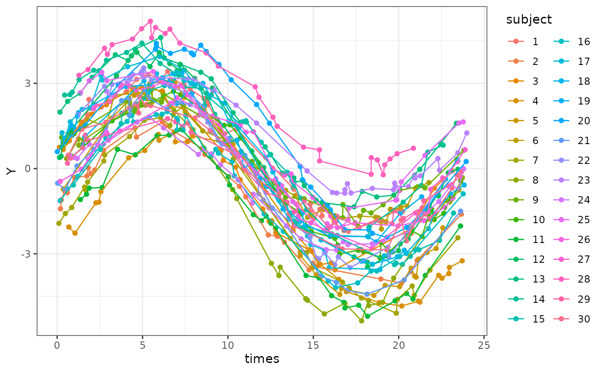
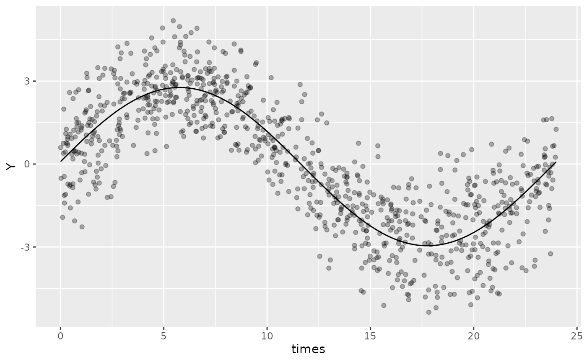
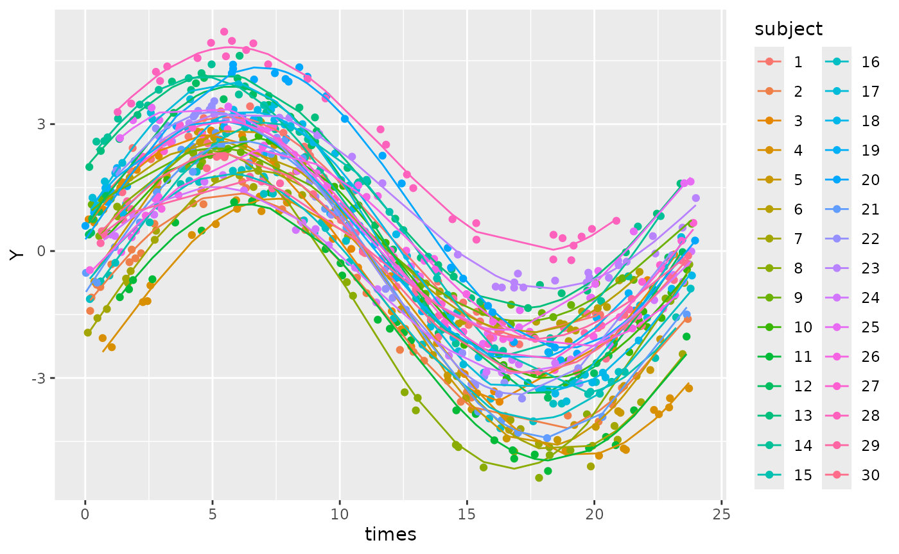

GLMMcosinor allows specification of mixed models accounting for fixed and/or random effects. Mixed model specification follows the lme4 format. See their vignette, Fitting Linear Mixed-Effects Models Using lme4, for details about how to specify mixed models.
Data with subject-level differences
To illustrate an example of using a model with random effects on the
cosinor components, we will first simulate some data with
id-level differences in amplitude and acrophase.
f_sample_id <- function(id_num,
n = 30,
mesor,
amp,
acro,
family = "gaussian",
sd = 0.2,
period,
n_components,
beta.group = TRUE) {
data <- simulate_cosinor(
n = n,
mesor = mesor,
amp = amp,
acro = acro,
family = family,
sd = sd,
period = period,
n_components = n_components
)
data$subject <- id_num
data
}
dat_mixed <- do.call(
"rbind",
lapply(1:30, function(x) {
f_sample_id(
id_num = x,
mesor = rnorm(1, mean = 0, sd = 1),
amp = rnorm(1, mean = 3, sd = 0.5),
acro = rnorm(1, mean = 1.5, sd = 0.2),
period = 24,
n_components = 1
)
})
)
dat_mixed$subject <- as.factor(dat_mixed$subject)A quick graph shows how there are individual differences in terms of MESOR, amplitude and phase.
ggplot(dat_mixed, aes(times, Y, col = subject)) +
geom_point() +
geom_line() +
theme_bw()
A single component model with random effects
For the model, we should include a random effect for the MESOR, amplitude and acrophase as these are clustered within individuals.
In the model formula, we can use the special amp_acro[n]
which represents the nth cosinor component. In this case, we
only have one component so we use amp_acro1. Following the
lme4-style mixed model formula, we add our random effect
for this component and the intercept term (MESOR) clustered within
subjects by using (1 + amp_acro1 | subject). The code below
fits this model
mixed_mod <- cglmm(
Y ~ amp_acro(times, n_components = 1, period = 24) +
(1 + amp_acro1 | subject),
data = dat_mixed
)#> Warning: the 'findbars' function has moved to the reformulas package. Please
#> update your imports, or ask an upstream package maintainer to do so.
#> Warning: the 'nobars' function has moved to the reformulas package. Please
#> update your imports, or ask an upstream package maintainer to do so.This works by replacing the amp_acro1 with the relevant cosinor
components when the data is rearranged and the formula created. The
formula created can be accessed using .$formula, and shows
the amp_acro1 is replaced by the main_rrr1 and
main_sss1 (the cosine and sine components of time that also
appear in the fixed effects).
mixed_mod$formula
#> Y ~ main_rrr1 + main_sss1 + (1 + main_rrr1 + main_sss1 | subject)
#> <environment: 0x564debdeaa48>The mixed model can also be plotted using autoplot, but
some of the plotting features that are available for fixed-effects
models may not be available for mixed-effect models.
autoplot(mixed_mod, superimpose.data = TRUE)
The summary of the model shows that the input means for MESOR, amplitude and acrophase are similar to what we specified in the simulation (0, 3, and 1.5, respectively).
summary(mixed_mod)
#>
#> Conditional Model
#> Raw model coefficients:
#> estimate standard.error lower.CI upper.CI p.value
#> (Intercept) -0.09323335 0.17907993 -0.44422356 0.25776 0.60263
#> main_rrr1 0.18030389 0.11089882 -0.03705381 0.39766 0.10398
#> main_sss1 2.85563791 0.09447410 2.67047207 3.04080 < 2e-16 ***
#> ---
#> Signif. codes: 0 '***' 0.001 '**' 0.01 '*' 0.05 '.' 0.1 ' ' 1
#>
#> Transformed coefficients:
#> estimate standard.error lower.CI upper.CI p.value
#> (Intercept) -0.09323335 0.17907993 -0.44422356 0.25776 0.60263
#> amp1 2.86132441 0.09431188 2.67647651 3.04617 < 2e-16 ***
#> acr1 1.50774041 0.03880609 1.43168187 1.58380 < 2e-16 ***
#> ---
#> Signif. codes: 0 '***' 0.001 '**' 0.01 '*' 0.05 '.' 0.1 ' ' 1We can see that the predicted values from the model closely resemble the patterns we see in the input data.
ggplot(cbind(dat_mixed, pred = predict(mixed_mod))) +
geom_point(aes(x = times, y = Y, col = subject)) +
geom_line(aes(x = times, y = pred, col = subject))
This looks like a good model fit for these data. We can highlight the
importance of using a mixed model in this situation rather than a fixed
effects only model by creating that (bad) model and comparing the two by
using the Akaike information criterion using AIC().
fixed_effects_mod <- cglmm(
Y ~ amp_acro(times, n_components = 1, period = 24),
data = dat_mixed
)
AIC(fixed_effects_mod$fit)
#> [1] 2834.918
AIC(mixed_mod$fit)
#> [1] 144.208Aside from not being able to be useful to see the differences between subjects from the model, we end up with much worse model fit and likely biased and/or imprecise estimates of our fixed effects that we are interested in!
REML
For mixed models, it may be most appropriate for them to be fit using
Restricted Maximum Likelihood (REML). GLMMcosinor does not automatically
use REML for mixed models but leaves it to the user to specify this when
calling cglmm(), the same as is done by
glmmTMB::glmmTMB(). Arguments passed to
cglmm(...) are used when calling
glmmTMB::glmmTMB(...). This means that the user can control
whether REML is used by using specifying REML = TRUE. See
?glmmTMB::glmmTMB for more details and what other aspects
of the model fitting can be controlled. Below is the same example as
above, but fit using REML, and shows that the model was fit using REML
by inspecting the modelInfo within the glmmTMB fit object.
mixed_mod <- cglmm(
Y ~ amp_acro(times, n_components = 1, period = 24) +
(1 + amp_acro1 | subject),
data = dat_mixed, REML = TRUE
)
mixed_mod_reml$fit
#> Formula:
#> Y ~ main_rrr1 + main_sss1 + (1 + main_rrr1 + main_sss1 | subject)
#> Zero inflation: ~1 - 1
#> Data: newdata
#> AIC BIC logLik -2*log(L) df.resid
#> 151.35876 199.38270 -65.67938 131.35876 890
#> Random-effects (co)variances:
#>
#> Conditional model:
#> Groups Name Std.Dev. Corr
#> subject (Intercept) 0.9969
#> main_rrr1 0.6154 0.22
#> main_sss1 0.5236 -0.32 -0.03
#> Residual 0.1990
#>
#> Number of obs: 900 / Conditional model: subject, 30
#>
#> Dispersion estimate for gaussian family (sigma^2): 0.0396
#>
#> Fixed Effects:
#>
#> Conditional model:
#> (Intercept) main_rrr1 main_sss1
#> -0.09324 0.18031 2.85564
mixed_mod_reml$fit$modelInfo$REML
#> [1] TRUE
mixed_mod$fit$modelInfo$REML
#> [1] FALSE